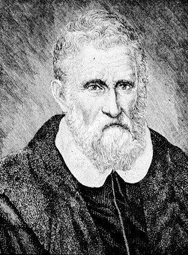

De la ciudad de Camandi
Al cabo de la pendiente, después de dos jornadas de montura, se halla uno en un inmenso llano, en cuya desembocadura está la ciudad de Camandi, que antaño fue muy grande y noble ciudad. Pero queda reducida hogaño, porque los tártaros la saquearon en varias ocasiones. Esta llanura es muy calurosa.
La provincia que mencionaremos ahora se llama Reobar. Sus frutos son los dátiles, las manzanas, los pistachos y otras especies que no crecen en nuestras regiones nórdicas. En este llano hay una especie de pájaro que se llama francolín, que es diferente de los francolines de otros países, pues son negros y blancos y tienen el pico y las patas encarnadas. Los animales suelen también ser bastante diferentes de los nuestros, y os hablaré ante todo de los bueyes. Los bueyes son muy grandes y blancos como nieve, el pelo liso y corto, por el calor sin duda; las astas gordas y pequeñas y nada puntiagudas. En el lomo tienen una prominencia redonda, alta dos palmos, es decir, una joroba. Son hermosísimos, y cuando los quieren cargar se echan como los camellos; luego álzanse por sí solos. Llevan muy bien pesadas cargas, siendo robustísimos. Tienen el morro grande como el de los pollinos, y la cola tan gruesa y larga que bien puede pesar treinta libras; son grandes y gordos, y exquisitos como alimento. En esta llanura hay varios castillos y villas fortificadas, con murallas altas y fuertes para la defensa contra los caraunas, que son bandidos que merodean por el país. ¿Y por qué se llaman caraunas? Porque sus madres son indias y sus padres tártaros. Cuando esta gente recorre el país dedicándose al pillaje, lo hacen con encantamientos y sortilegios y obras diabólicas, logrando que la atmósfera se oscurezca de modo que nada se pueda divisar al horizonte. Y consiguen que estas tinieblas perduren unos siete días. Conocen perfectamente la región. Cuando han sumido al país en la oscuridad, cabalgan apretados los unos contra los otros en grupos que llegan a formar hasta un núcleo de 10.000 (a veces más y a veces menos), de tal suerte, que ocupan casi toda la parte que desean devastar, no escapando a su triste suerte ni hombre ni bestia ni objeto alguno. De suerte que después de haber apresado a los hombres, matan a los viejos y se llevan a los mozos, vendiéndolos como siervos y esclavos. Su rey se llama Nogodar. Este Nogodar fue a la corte de Ciagatai, que era hermano del Gran Khan, con 10.000 hombres, y vivió con él, pues era su tío y, al mismo tiempo, un gran señor. Cuando hubo obtenido la hospitalidad, Nogodar ideó y ejecutó una gran felonía. Ya os diré cómo: Al separarse de su tío Ciagatai, que vivía en la Armenia Mayor, se escapó con 10.000 hombres, todos crueles y ladinos; pasó por Badasian y por una provincia que se llama Pasciai, por otra denominada Kesciemur, perdiendo gente y ganado, porque los caminos eran estrechos y malos y había muchos desfiladeros. Cuando hubieron pasado todas estas provincias, entraron en la India limítrofe a una provincia llamada Dilivar. Se apoderaron de una hermosa ciudad llamada Dilivar, asentando en ella sus reales y desposeyendo al rey Asidin, sultán poderoso. Ahí quedó Nogodar con sus huestes, y no hubo nadie que mandara por encima de él, e hizo la guerra a los demás tártaros que vivían en los vecinos reinos.
He aquí la historia de esa llanura y de las tribus que hacen la oscuridad para dedicarse al bandolerismo. Micer Marcos fue preso por estas gentes en la oscuridad, pero pudo escapar a un castillo llamado Canosalmi. De sus compañeros pocos salvaron, fueron presos, muertos o vendidos. Y os contaré ahora otras cosas más amenas.
Fuente: cervantesvirtual.com
Sobre el autor:
Mercader veneciano. Realizó un legendario viaje al Asia Oriental que ha quedado recogido en un libro llamado "Il Milione", conocido en castellano como "Los viajes de Marco Polo"